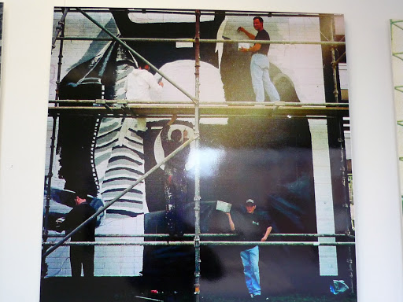
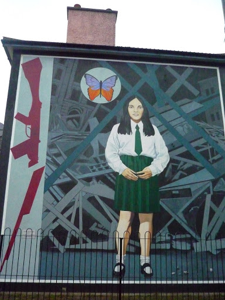
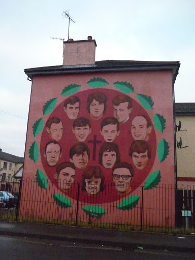
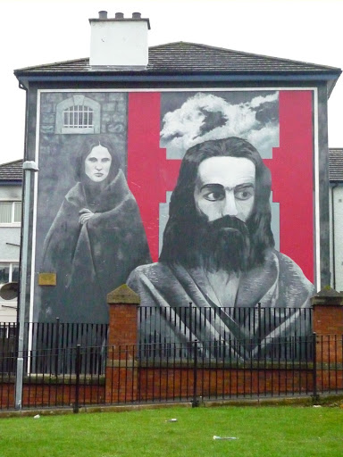

A visit to Derry means also a visit to one of the hubs of the history of Northern Ireland. I used to live in Derry some years ago and in the pubs, after a few drinks, I would often hear stories from locals about their first-hand experiences during the “troubles”.
As a foreigner this is a frequent occurrence, for storytelling is the most powerful medium there is. The history of Derry and in fact the history of Northern Ireland is not very well known. At most, one remembers the “Bloody Sunday” and other atrocities but facts are rarely known. The wound is collectively healing; however, it is still fresh: the longed-for “Seville Report” was only published last June, finally revealing the truth about the actions of the British army on the Bloody Sunday.
The history of Derry is still the history of its people. The murals of Rossville Street in the Bogside, one of the main tourist attractions of Derry, tell this story.
Going back to Derry after some years I was taking a stroll in the Bogside on a bitterly cold day under a low Irish sky of January. Derry is one of the major centres of Northern Ireland, welcoming and lively. It lies on the mouth of the River Foyle, in County Derry, a county of small towns that don’t reach 3000 people each. The river flows through the city and divides the Waterside, Protestant, from the Bogside, Catholic. Nowadays the distinction is not so clear-cut. However, a friend of mine who has been living in Derry since 2001 and who eventually shot a documentary about it, told me that up to two years ago the gate in Bishop Street, in the Protestant side of the city, still used to be closed with a chain during the night.
In Rossville Street there is a museum, the Museum of Free Derry, also known as the Bloody Sunday Museum. It exhibits videos and documents dating back to the period of the “troubles”, including the original list of the victims of the Bloody Sunday - a document the sight of which gives you the shivers -, rubber bullets used by the British troops and even the coat wore by one of the victims on the day of the massacre.
The museum was opened with the support of several associations in order to remember and primarily to convey the truth on what really happened on that fateful day, since history has denied and scorned the real events for years, according to what the curator told me some years ago.
I was walking again along the huge murals painted on the walls of some buildings, and I noticed an art gallery that wasn’t there before. I went in. Old pictures of sectarian clashes hung on the walls. At the counter one of the three Bogside Artists, Tom Kelly, welcomed me. We started talking about the gallery and he told me the story of the murals.
The Bogside Artists group was set up in 1993”, he said. “The People’s Gallery was opened two years ago by our Nobel John Hume and we have great support by Brian Friel, our play writer. After a lot of discussion and asking the right questions we had a vision to articulate our experience and tell our story for ourselves in a way we re-appropriate our story, taking it back from the British media.
In 1993-94 was the first mural, the young kid with the gas mask.” The twelfth mural in the series was unveiled on 20th June 2008.
“The Petrol Bomber” depicts a young boy wearing a gas mark and holding a petrol bomb made from a milk bottle. It was the 12th of August, 1969, the “Battle of the Bogside”. In a booklet available at the museum, Marching On, we read that for years the catholic population had been suffering discriminations regarding work, housing and right to vote. “Gerrymandering” is the term used to refer to the manipulation of the right to vote.

On the 5th of October 1968 the Northern Ireland Civil Right Association (NICRA) – depicted in the mural “Civil Rights”- had organized a march from Duke Street in Derry’s Waterside. It was the beginning of the “troubles”. The Royal Ulster Constabulary (RUC) brutally attacked the demonstrators and the news was spread around the world by international media.
In January and August 1969 barricades were erected around the Bogside, in order to protect the people from the RUC’s assaults and incursions, where people were regularly beaten and had their property destroyed. Free Derry area was born. The Free Derry corner landmark still towers at the centre of Rossville Street.

During the clashes in Waterloo Place on the 12th of August, the RUC started to use CS gas and petrol bombs against the protesters; the neighbourhood was evacuated on the 14th of August, having become unbearable because of the gas. During the night the people of the Bogside knocked the doors to ask for empty bottles, washing powder and sugar to make petrol bombs.
After Derry, the protest spread in other cities in the North. The battle ended after three days, when the British troops marched on Waterloo Place, after being called by the Belfast government.
However, Kelly says that the murals are not there to make a political statement. “They say: this is our experience. The people of the community actually commissioned us to tell their story.”
In fact, all the murals were paid for the one parent families and pensioners in particular of the Bogside. Unlike other murals in Northern Ireland, the Bogside Artists went to the people first to get their consent, especially the ones that have lost their love ones in the conflict.
The victims too are commemorated in the murals, like the fourteen year old Annette McGavigan, the youngest victim of the “troubles” – depicted in “Death of Innocence” – and the 14 victims of the Bloody Sunday, commemorated in the mural “Bloody Sunday commemoration”.
 
It was the 30th of January 1972. The NICRA had organized a new march against internment – that is, imprisonment without trial. Internment had been used by the Unionist Stormont Government since the creation of the state of the North in the ‘20s, as a means to suppress republican opposition.
In 1971, during Operation Demetrius, the British Army arrested 342 Irish people, most of which had no connection with the IRA, and others who belonged to the civil rights movement. The arrests were based on a list of 450 names provided by the RUC Special Brunch. In one occasion they even tried to arrest a man who had been dead for the past 4 years.
We read in the booklet Marching On that a report of 1971 of the Compton Commission established that “interrogations with the use of hooding, white noise, sleep deprivation, prolonged physical exercise together with a diet of bread and water did not constitute brutality or torture”.
On the day of the Bloody Sunday, January the 30th, 26 military barricades were erected around the Bogside; the 1st Battalion of the Parachute Regiment was sent to the city to support the army. Despite these preparation, marchers were expecting a peaceful day, since the IRA had promised that they would have not interfere with the march. While the demonstration proceeded towards the Bogside, several hundred people headed towards the barricades in William Street. Riots began, with stones and bottles thrown to the army, which responded with rubber bullets, CS Gas and water cannon.

Samples of rubber bullets are available at the Bloody Sunday Museum and in the People’s Gallery. A rubber bullet can be the size of a quarter bottle of wine: people don’t get away with just a scratch when hit by one of those. At 15.55 the Paras fired the first five shots from a building, away from William Street. It was 16.07 when the Paras began to shoot against the marchers in Rossville St., where now the murals are.
You can read in a flyer available at the Bloody Sunday Museum:
“In less that half an hour, in an area not much larger than a football field, British soldier had killed 13 unarmed men and wounded another 13 unarmed men and 2 women. The people of Derry were left in a state of shock […] The British army and government claimed that hundreds of shots had been fired at the soldiers, even though not a single soldier, or even army vehicle, had been hit by this alleged ‘fusillade of fire’.”
With the murals, Derry’s community wanted to commemorate this story.
According to Kelly, the Bogside Artists went directly to the people who live in the apartments right behind the murals in order to get their consent. Then they took the idea and design to the wider community and they showed them. “We went to all the doors, the houses, the shops, farms and we asked for a donation to cover the cost of the paint and the scaffolding, which can be quite expensive. We painted them on a voluntary bases. We always have and probably always will.”
Kelly says that it was noticeable for a community based project that the Bogside artists were never supported by the Art Council and the Northern Ireland Tourist Board.
“In essence our work is very much a cathartic experience, it’s an understanding and examining the events that impacted our community that we can see closer and be able to move on and that’s why the last mural that you see when you leave the Bogside is our ‘Peace mural’.” The mural represent a dove and an oak leaf – Derry comes from Doire, which in Gaelic means “oak”– on a squared background. Kelly explains that the squares represent equality on all sides and that key component of the mural is the fact that begins in the dark corner and it makes its way towards the light. “That is a mural that speaks of tomorrow while all the other murals are all key events of the past.”

This last mural lies beside the mural “Hunger Strike”, which depicts one of the seven man who went on hunger strike at the Maze prison in Belfast from October 1980, in protest against the loss of their rights as political prisoners.

According to Kelly, murals are a big part of heritage in the North of Ireland, like in San Francisco, Philadelphia or Mexico City. This is why the artists reckoned that they were the best means to tell their story. All three artists were also disenchanted with the art gallery circuit and they felt that it was important “to tell our story before the revisionists get their hands on it”. All three artists lost family members in the conflict and they were listed for execution by a loyalist death squad several years ago. “We got a death threat from the UVF [Ulster Volunteer Force]. The fact is that everybody knows who the Bogside artists are. We’ve worked with the community and there’s no gimmicks; unlike other graffiti artists, there’s no painting in the darkness. We were painting while the conflict was going on and paying every price. I still do. But we fiercely defend our independence and as long as we’ve got the support of the people in the Bogside, which we have, we will continue to paint what we want, wherever we want.”
In the past few years the artists were invited to exhibit and to take lectures and presentations in universities and art galleries all over the world , like Canada, Germany, French, Belgium, Australia and United States. They are just back from Shenzhen in China and they are also not long back from Chicago, Indiana and Miami. “We are doing a series of paintings in different establishments on the theme of freedom of speech. It’s universal: on close inspections you won’t even see any sign of irishness on our murals because we don’t have a monopoly on operations and conflicts, so young Palestinians or young people from Tienanmen square or Argentina can identify with our work. We thought that it was challenging to make a statement about freedom of expression in China, it was a bold statement.”
USEFUL LINKS
The murals: http://www.bogsideartists.com/
The history: http://www.museumoffreederry.org/


Comments